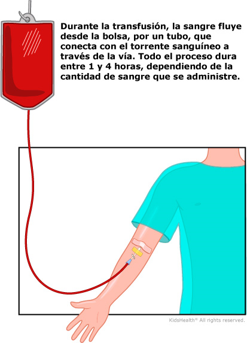

.png)
Información para el paciente ambulatorio
Transfusion de sangre
Una transfusión de sangre es un procedimiento médico relativamente sencillo. En una transfusión, un paciente recibe sangre entera o alguno de sus componentes por vía intravenosa (o VI). La VI es un tubo muy fino que se introduce en una vena utilizando una pequeña aguja.
Aunque lo más probable es que el paciente note el pinchazo de la aguja, una transfusión de sangre es prácticamente indolora.
Una transfusión de sangre se puede utilizar para reponer una pérdida de sangre o de cualquiera de sus componentes.
Las transfusiones duran entre 1 y 4 horas, en función de la cantidad de sangre. No requieren ningún tiempo especial de recuperación.
Las transfusiones se llevan a cabo en el sanatorio.
¿De dónde procede la sangre?
Debido a que no existe ningún producto artificial que pueda sustituir a la sangre, la sangre transfundida debe ser donada. Las tres formas en que se puede donar sangre son las siguientes:
- Donación de sangre autóloga. A veces, cuando una persona sabe con tiempo de antelación que va a necesitar una transfusión (para una operación programada, por ejemplo), puede donar su propia sangre de antemano. No existen requisitos relacionados con la edad pero, por lo general, los niños no donan su propia sangre hasta que superan los 12 años de edad.
- Donación directa. Cuando un familiar o un amigo con sangre compatible dona específicamente su sangre a un paciente en concreto.
- Donación de voluntarios. Debido a que no hay pruebas médicas de que la sangre procedente de donantes directos sea mejor que la procedente de donantes voluntarios, la mayoría de los pacientes reciben sangre donada en las campañas de donación de sangre, que suelen organizar organismos de recogida independientes, como la Cruz Roja Americana. La edad mínima para donar sangre son los 16 o los 17 años, dependiendo del lugar de la residencia.
Transfundir sangre
La bolsa de sangre se cuelga boca abajo de una bomba VI que controla la velocidad de la transfusión.

El enfermero medirá la tensión arterial del paciente, su temperatura corporal y su pulso varias veces a lo largo del procedimiento. Además, lo controlará atentamente por si presentara cualquier signo de reacción alérgica o de otro tipo, como una erupción, fiebre, dolor de cabeza o inflamación.
Después de la transfusión, si el paciente va a irse a casa, le extraerán la vía de la vena y le vendarán el área. Es posible que note la zona algo dolorida o con sensación de hormigueo durante un rato. Podrían administrar medicamentos al paciente, si presentara cualquier efecto secundario, como fiebre o dolor de cabeza.